<title>Mandala Stencil Studio</title>
<meta name="claude:viewport-fit-sides" content="cover">
<link rel="preconnect" href="https://fonts.googleapis.com">
<link rel="preconnect" href="https://fonts.gstatic.com" crossorigin>
<link rel="stylesheet" href="https://fonts.googleapis.com/css2?family=Syne:wght@600;700;800&family=Inter:wght@400;500;600&family=IBM+Plex+Mono:wght@400;500&display=swap">
<style>
/* Layout: one reading column (max 1080px) with a sticky section bar; paintings sit like canvases on a dark studio wall. */
:root {
  --bg: #eef2f2; --surface: #ffffff; --surface-2: #e3e9ea; --ink: #11191d; --muted: #55646b;
  --rule: #d2dbdd; --turq: #0e8a85; --gold: #9a6a08; --chip: #dff1ef; --chip-ink: #0b5e5a;
  --canvas: #0b0f14; --shadow: 0 1px 2px rgba(10,20,25,.08), 0 8px 24px rgba(10,20,25,.08);
  --f-display: "Syne", "Avenir Next", "Segoe UI", sans-serif;
  --f-body: "Inter", system-ui, -apple-system, "Segoe UI", sans-serif;
  --f-mono: "IBM Plex Mono", ui-monospace, "SF Mono", Menlo, monospace;
}
@media (prefers-color-scheme: dark) { :root:not([data-theme="light"]) {
  --bg: #0d1215; --surface: #151c20; --surface-2: #1b2429; --ink: #e8eef0; --muted: #98a7ad;
  --rule: #263238; --turq: #46d9d2; --gold: #f2c45a; --chip: #133432; --chip-ink: #7fe6df;
  --canvas: #0b0f14; --shadow: 0 1px 2px rgba(0,0,0,.4), 0 10px 30px rgba(0,0,0,.35); color-scheme: dark; } }
:root[data-theme="dark"] {
  --bg: #0d1215; --surface: #151c20; --surface-2: #1b2429; --ink: #e8eef0; --muted: #98a7ad;
  --rule: #263238; --turq: #46d9d2; --gold: #f2c45a; --chip: #133432; --chip-ink: #7fe6df;
  --canvas: #0b0f14; --shadow: 0 1px 2px rgba(0,0,0,.4), 0 10px 30px rgba(0,0,0,.35); color-scheme: dark; }

* { box-sizing: border-box; }
html { scroll-behavior: smooth; }
@media (prefers-reduced-motion: reduce) { html { scroll-behavior: auto; } }
body { background: var(--bg); color: var(--ink); font: 400 16px/1.6 var(--f-body); }
body::before { content: ""; position: fixed; inset: 0 0 auto; height: env(safe-area-inset-top, 0px); z-index: 10; background: var(--bg); }
.wrap { max-width: 1080px; margin: 0 auto; padding-left: max(16px, env(safe-area-inset-left, 0px)); padding-right: max(16px, env(safe-area-inset-right, 0px)); }
h1, h2, h3 { font-family: var(--f-display); text-wrap: balance; margin: 0; letter-spacing: -0.01em; }
h1 { font-size: clamp(2.2rem, 5.2vw, 3.6rem); font-weight: 800; line-height: 1.02; }
h2 { font-size: clamp(1.5rem, 3vw, 2.1rem); font-weight: 700; line-height: 1.15; }
h3 { font-size: 1.08rem; font-weight: 700; line-height: 1.3; }
p { margin: 0; max-width: 66ch; }
a { color: var(--turq); }
a:focus-visible, button:focus-visible { outline: 2px solid var(--turq); outline-offset: 2px; border-radius: 4px; }
.mono { font-family: var(--f-mono); font-size: .86em; }
.eyebrow { font: 500 .74rem/1 var(--f-mono); letter-spacing: .12em; text-transform: uppercase; color: var(--muted); }
.muted { color: var(--muted); }
img { display: block; max-width: 100%; height: auto; }

/* nav */
nav.bar { position: sticky; top: env(safe-area-inset-top, 0px); z-index: 5; background: color-mix(in srgb, var(--bg) 88%, transparent); backdrop-filter: blur(8px); border-bottom: 1px solid var(--rule); }
nav.bar .wrap { display: flex; gap: 4px 18px; align-items: center; overflow-x: auto; padding-block: 10px; scrollbar-width: none; }
nav.bar a { font: 500 .8rem/1 var(--f-mono); color: var(--muted); text-decoration: none; white-space: nowrap; padding: 6px 0; }
nav.bar a:hover { color: var(--ink); }
nav.bar .brand { font-family: var(--f-display); font-weight: 800; color: var(--ink); font-size: .95rem; margin-right: 6px; }

section { padding-block: 56px; border-bottom: 1px solid var(--rule); }
section > .wrap { display: grid; gap: 24px; }
.lede { font-size: 1.12rem; color: var(--muted); max-width: 60ch; }

/* hero */
.hero { padding-block: 40px 56px; }
.hero .wrap { display: grid; grid-template-columns: minmax(0, 1.05fr) minmax(0, 1fr); gap: 40px; align-items: center; }
.hero .copy { display: grid; gap: 18px; }
.canvas { background: var(--canvas); border-radius: 6px; box-shadow: var(--shadow); overflow: hidden; }
.facts { display: grid; grid-template-columns: repeat(3, minmax(0, 1fr)); gap: 12px; margin-top: 6px; }
.fact { border-top: 2px solid var(--turq); padding-top: 10px; }
.fact b { display: block; font: 700 1.5rem/1.1 var(--f-display); }
.fact span { font-size: .85rem; color: var(--muted); }

/* system */
.system { display: grid; grid-template-columns: minmax(0, .9fr) minmax(0, 1.1fr); gap: 32px; align-items: start; }
.principles { display: grid; gap: 16px; }
.principle { display: grid; grid-template-columns: 30px minmax(0, 1fr); gap: 12px; }
.principle .k { width: 30px; height: 30px; border-radius: 50%; border: 1.5px solid var(--turq); display: grid; place-items: center; color: var(--turq); font: 600 .8rem/1 var(--f-mono); }
.principle p { font-size: .96rem; }
.legend { display: flex; flex-wrap: wrap; gap: 8px 16px; font-size: .85rem; color: var(--muted); }
.legend i { display: inline-block; width: 10px; height: 10px; border-radius: 2px; margin-right: 6px; vertical-align: -1px; }

/* phases */
.phases { display: grid; gap: 14px; }
.phase { display: grid; grid-template-columns: 110px minmax(0, 1fr); gap: 20px; padding: 18px 20px; background: var(--surface); border: 1px solid var(--rule); border-radius: 8px; }
.phase .tag { display: grid; gap: 8px; align-content: start; }
.phase .tag b { font: 800 1.9rem/1 var(--f-display); color: var(--turq); }
.chip { display: inline-block; font: 500 .72rem/1 var(--f-mono); letter-spacing: .06em; text-transform: uppercase; padding: 5px 8px; border-radius: 999px; background: var(--chip); color: var(--chip-ink); width: max-content; }
.chip.later { background: var(--surface-2); color: var(--muted); }
.phase .body { display: grid; gap: 8px; min-width: 0; }
.phase ul { margin: 0; padding-left: 18px; display: grid; gap: 3px; font-size: .94rem; }
.phase .exit { font-size: .88rem; color: var(--muted); }

/* priority */
.order { counter-reset: o; display: grid; gap: 10px; margin: 0; padding: 0; list-style: none; }
.order li { counter-increment: o; display: grid; grid-template-columns: 44px minmax(0, 1fr); gap: 14px; align-items: start; padding: 12px 0; border-bottom: 1px dashed var(--rule); }
.order li::before { content: counter(o); font: 800 1.4rem/1 var(--f-display); color: var(--gold); padding-top: 2px; }
.order li p { font-size: .95rem; }

/* parts */
.parts { display: grid; grid-template-columns: repeat(3, minmax(0, 1fr)); gap: 14px; }
.part { background: var(--surface); border: 1px solid var(--rule); border-radius: 8px; padding: 14px; display: grid; grid-template-rows: 150px auto; gap: 12px; }
.part .pic { display: grid; place-items: center; background: var(--surface-2); border-radius: 6px; padding: 10px; overflow: hidden; }
.part .pic img { max-height: 130px; width: auto; }
.part .meta { display: grid; gap: 6px; align-content: start; }
.part .id { display: flex; gap: 8px; align-items: baseline; flex-wrap: wrap; }
.part .id code { font: 600 .82rem/1 var(--f-mono); color: var(--turq); }
.part p { font-size: .88rem; color: var(--muted); }
.part dl { display: grid; grid-template-columns: auto minmax(0, 1fr); gap: 2px 10px; margin: 4px 0 0; font-size: .8rem; }
.part dt { color: var(--muted); font-family: var(--f-mono); }
.part dd { margin: 0; font-family: var(--f-mono); font-variant-numeric: tabular-nums; }

/* paintings */
.paintings { display: grid; grid-template-columns: repeat(3, minmax(0, 1fr)); gap: 18px; }
.painting { display: grid; gap: 10px; }
.painting p { font-size: .9rem; color: var(--muted); }
.swatches { display: flex; gap: 6px; }
.swatches i { width: 18px; height: 18px; border-radius: 50%; border: 1px solid var(--rule); }

/* steps */
.steps { display: grid; grid-template-columns: repeat(3, minmax(0, 1fr)); gap: 18px; counter-reset: s; }
.step { display: grid; gap: 10px; align-content: start; counter-increment: s; }
.step h3::before { content: counter(s) "  "; color: var(--gold); font-family: var(--f-display); }
.step ul { margin: 0; padding-left: 18px; display: grid; gap: 3px; font-size: .9rem; }
.step .note { font-size: .82rem; color: var(--muted); }

/* rules */
.rules { display: grid; grid-template-columns: repeat(2, minmax(0, 1fr)); gap: 12px 32px; }
.rule { padding: 12px 0; border-top: 1px solid var(--rule); display: grid; gap: 4px; }
.rule b { font-family: var(--f-display); font-size: 1rem; }
.rule p { font-size: .93rem; color: var(--muted); }

/* calibrate */
.calib { display: grid; grid-template-columns: minmax(0, 1fr) minmax(0, 1fr); gap: 32px; align-items: start; }
.calib .card { background: var(--surface-2); border-radius: 8px; padding: 16px; }
pre { margin: 0; overflow-x: auto; background: var(--surface); border: 1px solid var(--rule); border-radius: 6px; padding: 12px 14px; font: 400 .84rem/1.5 var(--f-mono); }
.tbl { overflow-x: auto; }
table { border-collapse: collapse; width: 100%; font-size: .9rem; }
th, td { text-align: left; padding: 8px 10px; border-bottom: 1px solid var(--rule); vertical-align: top; }
th { font: 500 .74rem/1.2 var(--f-mono); letter-spacing: .06em; text-transform: uppercase; color: var(--muted); }
td.num { font-family: var(--f-mono); font-variant-numeric: tabular-nums; white-space: nowrap; }

.two { display: grid; grid-template-columns: minmax(0, 1fr) minmax(0, 1fr); gap: 28px; }
.files li { font-family: var(--f-mono); font-size: .84rem; }
footer { padding-block: 32px 48px; color: var(--muted); font-size: .85rem; }

@media (max-width: 900px) {
  .parts, .paintings, .steps { grid-template-columns: repeat(2, minmax(0, 1fr)); }
}
@media (max-width: 760px) {
  .hero .wrap, .system, .calib, .two, .rules { grid-template-columns: minmax(0, 1fr); }
  .phase { grid-template-columns: minmax(0, 1fr); gap: 10px; }
  .phase .tag { grid-auto-flow: column; justify-content: start; align-items: center; gap: 12px; }
}
@media (max-width: 520px) {
  .parts, .paintings, .steps { grid-template-columns: minmax(0, 1fr); }
  .facts { grid-template-columns: repeat(3, minmax(0, 1fr)); gap: 8px; }
  .fact b { font-size: 1.2rem; }
}

.mixer { display:grid; grid-template-columns: minmax(0, 1fr) minmax(0, 300px); gap: 24px; align-items: start; }
.stage { position: relative; aspect-ratio: 1 / 1; border-radius: 6px; overflow: hidden; box-shadow: var(--shadow); background: var(--mx-bg, #0b0f14); max-width: 100%; }
.stage > div { position: absolute; inset: 0; }
.stage svg { width: 100%; height: 100%; display: block; }
.stage .ln { fill: var(--mx-line, #3fd6d0); } .stage .dw { fill: var(--mx-white, #f4efe2); } .stage .dg { fill: var(--mx-gold, #f2c45a); }
.controls { display: grid; gap: 16px; }
.controls fieldset { border: 1px solid var(--rule); border-radius: 8px; padding: 10px 12px; display: grid; gap: 6px; margin: 0; }
.controls legend { font: 500 .74rem/1 var(--f-mono); letter-spacing: .08em; text-transform: uppercase; color: var(--muted); padding: 0 4px; }
.controls label { display: flex; gap: 8px; align-items: center; font-size: .92rem; cursor: pointer; }
.controls .parts-used { font-family: var(--f-mono); font-size: .8rem; color: var(--muted); }
.gallery { display: grid; grid-template-columns: repeat(5, minmax(0, 1fr)); gap: 10px; }
.gallery figure { margin: 0; display: grid; gap: 4px; }
.gallery figcaption { font-size: .78rem; color: var(--muted); }
.pill { font: 500 .72rem/1 var(--f-mono); padding: 4px 7px; border-radius: 999px; background: var(--surface-2); color: var(--muted); }
@media (max-width: 900px) { .gallery { grid-template-columns: repeat(3, minmax(0, 1fr)); } .mixer { grid-template-columns: minmax(0, 1fr); } }
@media (max-width: 520px) { .gallery { grid-template-columns: repeat(2, minmax(0, 1fr)); } }
</style>

<nav class="bar" aria-label="Sections"><div class="wrap">
<span class="brand">Stencil Studio</span>
<a href="#how">How it works</a><a href="#phases">Phases</a><a href="#print">Printing</a><a href="#kit01">Kit 01</a>
<a href="#kit02">Kit 02</a><a href="#library">Library</a><a href="#mixer">Mixer</a><a href="#rules">Rules</a><a href="#files">Files</a>
</div></nav>

<header class="hero"><div class="wrap">
<div class="copy">
<span class="eyebrow">Sacred geometry · acrylic marker · 3D printed · v3</span>
<h1>Mandala Stencil Studio</h1>
<p class="lede">3D-printed stencils for precise sacred-geometry mandalas in acrylic marker, with no compass and no pencil. Every piece locks onto one hub, does one motif, and draws with its edges, its openings and its grooved dot rows.</p>
<p>v3 is a rework after your review. The lock now uses solid V-teeth. Every wall is at least 1.6 mm. Dots are lines with pockets. Everything prints flat with no supports.</p>
<div class="facts">
<div class="fact"><b>37</b><span>printable parts across 2 kits and a library</span></div>
<div class="fact"><b>130/130</b><span>fit, path, wall, line and dot checks pass</span></div>
<div class="fact"><b>10</b><span>recipes from 5 centres × 2 rings</span></div>
</div></div>
<figure class="canvas" style="margin:0">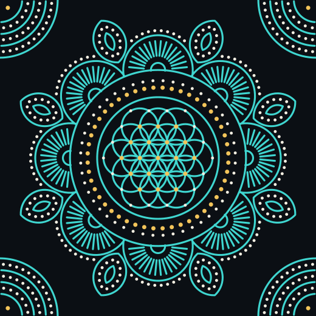</figure>
</div></header>

<section id="how"><div class="wrap">
<span class="eyebrow">How it works</span>
<h2>One hub. Every piece locks on, works on both faces, and draws with its edges</h2>
<div class="rules">
<div class="rule"><b>Solid V-teeth</b><p>The hub has a V-notch every 7.5° (48 around the outside, 6 inside). Pieces have full-height V-teeth, 3.6 mm wide. They drop in and lift straight up, can’t turn, and print as plain solid triangles.</p></div>
<div class="rule"><b>Both faces</b><p>A tooth is the same top and bottom, so every piece also works flipped. Face B draws the mirror image: the other half of an arc, rays between rays, the petal on the other side of the number.</p></div>
<div class="rule"><b>Lanes, not notched edges</b><p>The hub’s notched edges are never traced. The ring around the hub is traced in a 2.6 mm gap between the hub and the ring piece. A centre’s border is traced in a 2.4 mm gap between the insert and the hub. Face A and face B tabs never cover the same spot, so both circles close.</p></div>
<div class="rule"><b>Edges and openings draw</b><p>Trace around a piece for its outline, inside an opening for an inner shape. Round holes give perfect circles: the Flower of Life is now the classic 19 circles, every one a whole opening.</p></div>
<div class="rule"><b>Dots: a line with pockets</b><p>Dot holes are linked by a 0.6 mm groove on each face. Glide the tip along the groove and press at each pocket. Edge notches work the same way along a rim.</p></div>
<div class="rule"><b>Strong and printable</b><p>Every wall is at least 1.6 mm (4 nozzle lines), checked automatically. Parts print flat on either face with no supports. Jigs and corner pieces print lips up.</p></div>
</div>
<div class="two">
<figure style="margin:0;display:grid;gap:8px">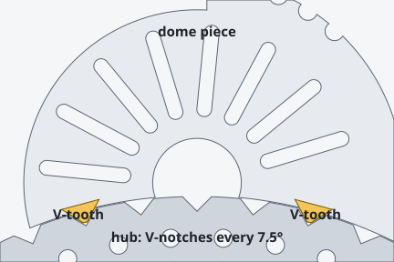<figcaption class="muted">Top view at hub number 1: the dome’s two gold V-teeth in the hub notches.</figcaption></figure>
<figure style="margin:0;display:grid;gap:8px">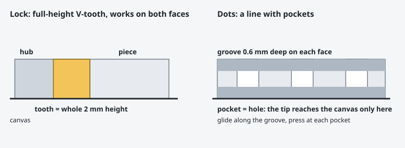<figcaption class="muted">Side views: a full-height tooth (no layers), and a dot row as a groove with pockets.</figcaption></figure>
</div>
</div></section>

<section id="phases"><div class="wrap">
<span class="eyebrow">The long project</span>
<h2>Phases</h2>
<div class="phases">
<article class="phase"><div class="tag"><b>0</b><span class="chip">Ready to print</span></div><div class="body"><h3>Calibrate</h3><ul><li>Print the Fit Card (T0), test each marker in its channels and holes, and note your sizes.</li><li>Print the hub and one dome piece to feel the lock before printing the rest.</li></ul></div></article>
<article class="phase"><div class="tag"><b>1</b><span class="chip">Ready to print · v3</span></div><div class="body"><h3>Kit 01 “Seed Bloom”, 20 cm</h3><ul><li>Hub, jig, the 19-circle Flower of Life (5 inserts), hub ring, dome, petal, corner.</li></ul></div></article>
<article class="phase"><div class="tag"><b>2</b><span class="chip">Ready to print · v3</span></div><div class="body"><h3>Kit 02 “Turquoise Bloom”, 30 cm</h3><ul><li>Kit 01’s centre plus ring C2, rainbow fans, great petals and hearts, star discs and halos, corner fans.</li></ul></div></article>
<article class="phase"><div class="tag"><b>3</b><span class="chip">Ready to print · v3</span></div><div class="body"><h3>Library</h3><ul><li>Centres: Sunflower, Merkaba, Seed of Life, Metatron’s Cube. A second ring set: Lace.</li><li>10 recipes and a mixer to try any combination.</li></ul></div></article>
<article class="phase"><div class="tag"><b>4</b><span class="chip later">Later</span></div><div class="body"><h3>Kits for other people</h3><ul><li>Test prints, wear tests, beginner tests, instruction cards, packaging.</li></ul></div></article>
<article class="phase"><div class="tag"><b>5</b><span class="chip later">Queued</span></div><div class="body"><h3>Ukrainian stitching</h3><ul><li>Stencils for vyshyvanka-style patterns, then a mandala that combines the Flower of Life with Ukrainian stitching.</li></ul></div></article>
</div></div></section>

<section id="print"><div class="wrap">
<span class="eyebrow">Printing</span>
<h2>Flat, no supports</h2>
<div class="two"><div class="tbl"><table><thead><tr><th>Setting</th><th>Value</th></tr></thead><tbody>
<tr><td>Material</td><td>PLA to start, PETG for pieces you use a lot</td></tr>
<tr><td>Nozzle / layer</td><td class="num">0.4 mm / 0.2 mm</td></tr>
<tr><td>Infill</td><td>100% (2 mm parts)</td></tr><tr><td>Supports / brim</td><td>None / off</td></tr>
<tr><td>Orientation</td><td>As in the files: flat, either face down. J20, J30, K1, K2 print lips up.</td></tr>
<tr><td>Elephant foot compensation</td><td class="num">0.1–0.15 mm</td></tr></tbody></table></div>
<div style="display:grid;gap:10px;align-content:start">
<p>Kit 01: about <b>60 cm³ (74 g)</b>. Kit 02 adds <b>34 cm³</b>. The library adds <b>104 cm³</b>.</p>
<p>Print the hub and one dome first. If the teeth feel tight, lower the flow 2–3%. If loose, raise it.</p>
<p class="muted">Every file is a closed solid. The build script checks every piece on both faces: seated with no overlap, a clear straight path down and up, locked against turning and sliding, walls ≥ 1.6 mm, every line closed, and no dot on another element’s paint.</p>
</div></div></div></section>

<section id="kit01"><div class="wrap">
<span class="eyebrow">Phase 1 · 20 × 20 cm / 8 × 8 in</span>
<h2>Kit 01 · Seed Bloom</h2>
<div class="paintings" style="grid-template-columns:repeat(2,minmax(0,1fr))">
<figure class="painting" style="margin:0"><div class="canvas"></div><h3>Turquoise</h3></figure>
<figure class="painting" style="margin:0"><div class="canvas">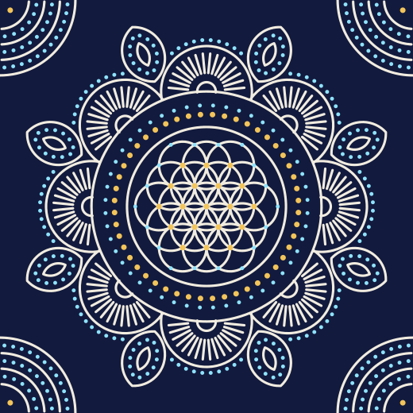</div><h3>Moonlight</h3></figure>
</div>
<div class="parts"><article class="part"><div class="pic">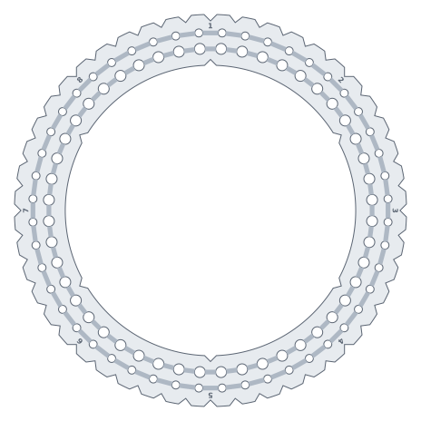</div>
<div class="meta"><div class="id"><code>H3</code><h3>Hub</h3></div><p></p>
<dl><dt>use</dt><dd>once</dd><dt>size</dt><dd>108 × 108 mm · one face</dd>
<dt>print</dt><dd>~40 min · 8 g</dd><dt>file</dt><dd>01_H3_hub.stl</dd></dl></div></article><article class="part"><div class="pic"></div>
<div class="meta"><div class="id"><code>J20</code><h3>Centre jig 20 cm / 8 in</h3></div><p></p>
<dl><dt>use</dt><dd>once</dd><dt>size</dt><dd>166 × 166 mm · prints lips up</dd>
<dt>print</dt><dd>~80 min · 15 g</dd><dt>file</dt><dd>02_J20_jig_20cm_8in.stl</dd></dl></div></article><article class="part"><div class="pic">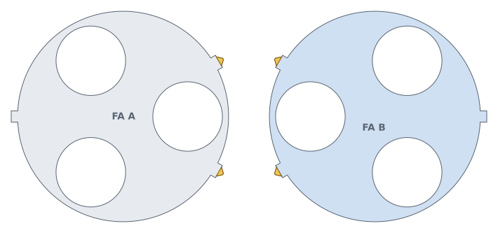</div>
<div class="meta"><div class="id"><code>FA</code><h3>Flower of Life: outer corners</h3></div><p></p>
<dl><dt>use</dt><dd>A then B at notch 1</dd><dt>size</dt><dd>78 × 75 mm · two faces</dd>
<dt>print</dt><dd>~40 min · 7 g</dd><dt>file</dt><dd>10_FA_flower_corners.stl</dd></dl></div></article><article class="part"><div class="pic">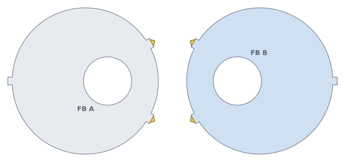</div>
<div class="meta"><div class="id"><code>FB</code><h3>Flower of Life: inner ring</h3></div><p></p>
<dl><dt>use</dt><dd>A then B at notch 1·2·3</dd><dt>size</dt><dd>78 × 75 mm · two faces</dd>
<dt>print</dt><dd>~50 min · 10 g</dd><dt>file</dt><dd>11_FB_flower_inner_ring.stl</dd></dl></div></article><article class="part"><div class="pic">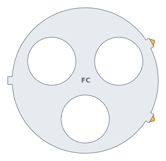</div>
<div class="meta"><div class="id"><code>FC</code><h3>Flower of Life: outer sides</h3></div><p></p>
<dl><dt>use</dt><dd>A at notch 1·2</dd><dt>size</dt><dd>78 × 75 mm · one face</dd>
<dt>print</dt><dd>~40 min · 7 g</dd><dt>file</dt><dd>12_FC_flower_sides.stl</dd></dl></div></article><article class="part"><div class="pic">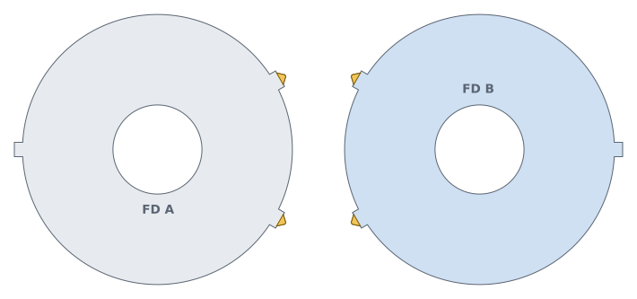</div>
<div class="meta"><div class="id"><code>FD</code><h3>Flower of Life: centre + border</h3></div><p></p>
<dl><dt>use</dt><dd>A then B at notch 1</dd><dt>size</dt><dd>78 × 75 mm · two faces</dd>
<dt>print</dt><dd>~50 min · 10 g</dd><dt>file</dt><dd>13_FD_flower_centre_border.stl</dd></dl></div></article><article class="part"><div class="pic">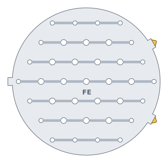</div>
<div class="meta"><div class="id"><code>FE</code><h3>Flower of Life: dots</h3></div><p></p>
<dl><dt>use</dt><dd>once</dd><dt>size</dt><dd>78 × 75 mm · one face</dd>
<dt>print</dt><dd>~60 min · 10 g</dd><dt>file</dt><dd>14_FE_flower_dots.stl</dd></dl></div></article><article class="part"><div class="pic"></div>
<div class="meta"><div class="id"><code>R1</code><h3>Hub ring</h3></div><p>trace the circle in the gap between hub and piece; face B fills the two tab gaps</p>
<dl><dt>use</dt><dd>A then B at hub 1–8</dd><dt>size</dt><dd>58 × 13 mm · two faces</dd>
<dt>print</dt><dd>~10 min · 1 g</dd><dt>file</dt><dd>30_R1_hub_ring.stl</dd></dl></div></article><article class="part"><div class="pic"></div>
<div class="meta"><div class="id"><code>DM</code><h3>Dome</h3></div><p>smooth edge = arc, notches = pearls, 8 slots = rays (16 with face B), cut-out = sun</p>
<dl><dt>use</dt><dd>A then B at hub 1–8</dd><dt>size</dt><dd>46 × 32 mm · two faces</dd>
<dt>print</dt><dd>~10 min · 2 g</dd><dt>file</dt><dd>31_DM_dome.stl</dd></dl></div></article><article class="part"><div class="pic">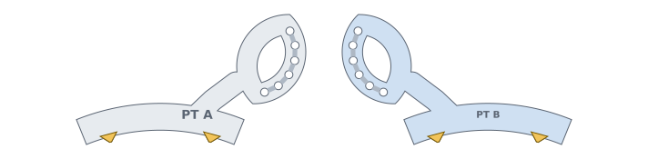</div>
<div class="meta"><div class="id"><code>PT</code><h3>Petal</h3></div><p>edge = petal, opening = inner petal, pockets on a groove = pearls; face B closes the arm gap</p>
<dl><dt>use</dt><dd>A then B at hub 1–8</dd><dt>size</dt><dd>63 × 36 mm · two faces</dd>
<dt>print</dt><dd>~10 min · 2 g</dd><dt>file</dt><dd>32_PT_petal.stl</dd></dl></div></article><article class="part"><div class="pic">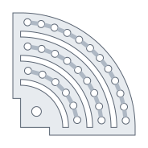</div>
<div class="meta"><div class="id"><code>K1</code><h3>Corner web 20 cm</h3></div><p></p>
<dl><dt>use</dt><dd>4 corners</dd><dt>size</dt><dd>38 × 38 mm · prints lips up</dd>
<dt>print</dt><dd>~20 min · 2 g</dd><dt>file</dt><dd>37_K1_corner_20cm.stl</dd></dl></div></article></div>
<h3>Step by step</h3>
<div class="steps"><div class="step"><div class="canvas">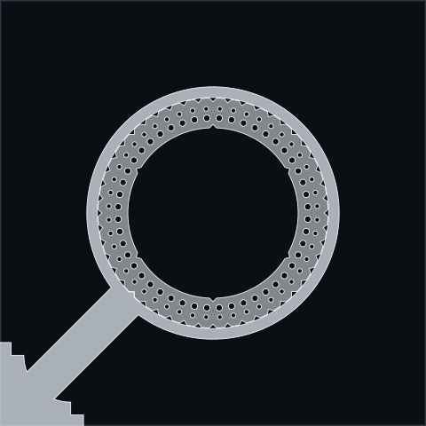</div><h3>Centre the hub</h3><ul><li>A rice grain of putty in each of the 3 pockets under the hub.</li><li>Hook the jig on a canvas corner. Drop the hub in with number 6 on the jig’s tooth. Press, lift the jig.</li></ul></div><div class="step"><div class="canvas">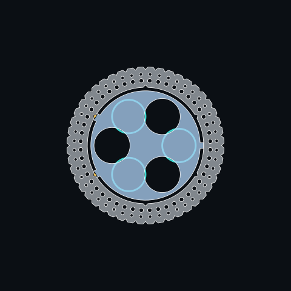</div><h3>Flower of Life: FA</h3><ul><li>Drop FA in: its two teeth go into two inner notches, the bump sits opposite.</li><li>Trace inside the 3 circles. Lift, flip to face B at the same notch: 3 more.</li></ul></div><div class="step"><div class="canvas">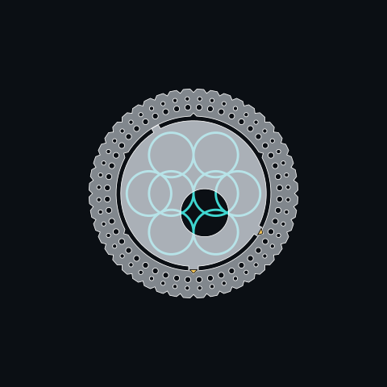</div><h3>Inner ring: FB</h3><ul><li>One circle per face. Face A then B at notches 1, 2 and 3 gives all six.</li></ul></div><div class="step"><div class="canvas">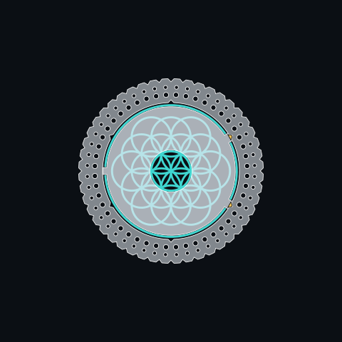</div><h3>Sides FC, centre FD</h3><ul><li>FC: face A at notches 1 and 2.</li><li>FD: trace the centre circle, then the border in the gap between the insert and the hub. Flip, trace the border again to close the tab gaps.</li></ul></div><div class="step"><div class="canvas">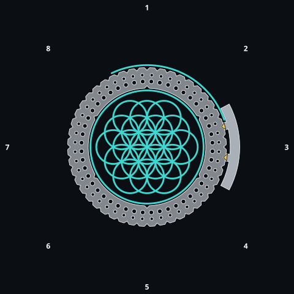</div><h3>Hub ring: R1</h3><ul><li>At each number: face A, trace the circle in the gap between hub and piece. Flip, face B.</li><li>The tabs never cover the same spot on both faces, so the circle closes.</li></ul></div><div class="step"><div class="canvas">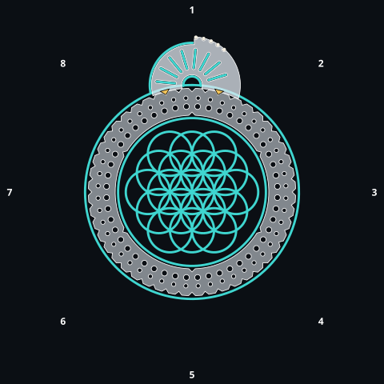</div><h3>Dome, face A</h3><ul><li>Smooth edge = arc. Notches = pearls. 8 slots = rays. Cut-out = sun.</li></ul></div><div class="step"><div class="canvas">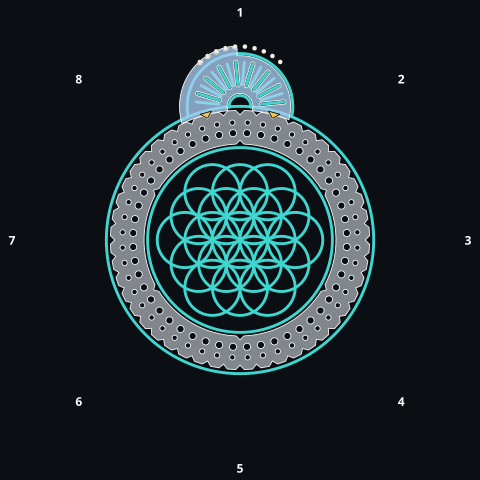</div><h3>Dome, face B</h3><ul><li>Same number, flipped: the other half of the arc and pearls, and 8 rays between the first 8.</li></ul></div><div class="step"><div class="canvas">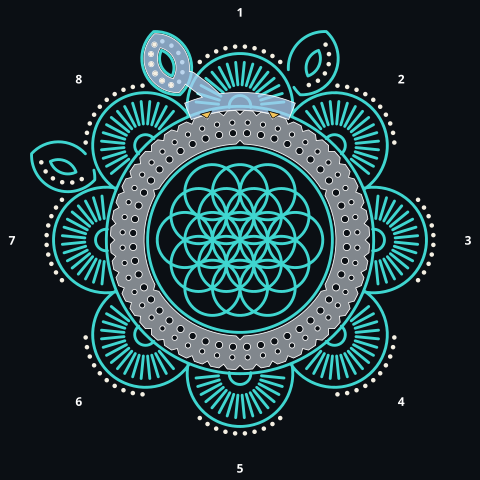</div><h3>Petals</h3><ul><li>Face A draws the petal right of the number, face B the one on the left.</li><li>Edge = petal, opening = inner petal, grooved pockets = pearls.</li></ul></div><div class="step"><div class="canvas">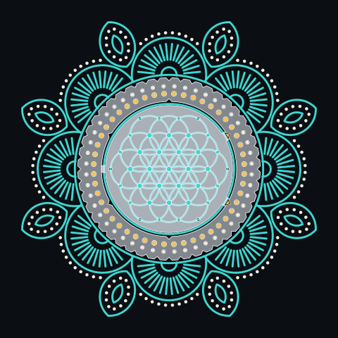</div><h3>Dots</h3><ul><li>Hub: glide each groove, press at every hole (big holes = big marker).</li><li>FE: the Flower of Life crossings, along the lattice grooves.</li></ul></div><div class="step"><div class="canvas">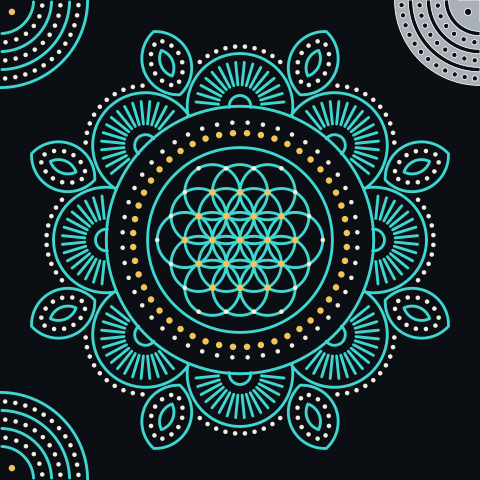</div><h3>Corners</h3><ul><li>Hook K1’s lips on each corner. Arcs in the channels, dots along the grooves.</li></ul></div><div class="step"><div class="canvas">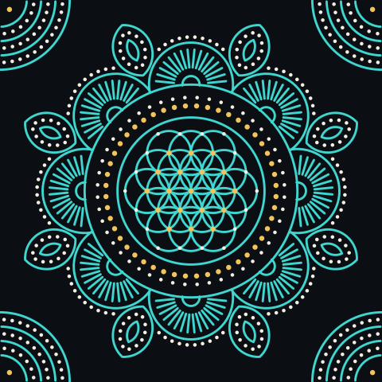</div><h3>Finish</h3><ul><li>Peel the hub off slowly. Touch up, cure 24 h, spray varnish.</li></ul></div></div>
</div></section>

<section id="kit02"><div class="wrap">
<span class="eyebrow">Phase 2 · 30 × 30 cm / 12 × 12 in</span>
<h2>Kit 02 · Turquoise Bloom</h2>
<div class="paintings" style="grid-template-columns:repeat(2,minmax(0,1fr))">
<figure class="painting" style="margin:0"><div class="canvas">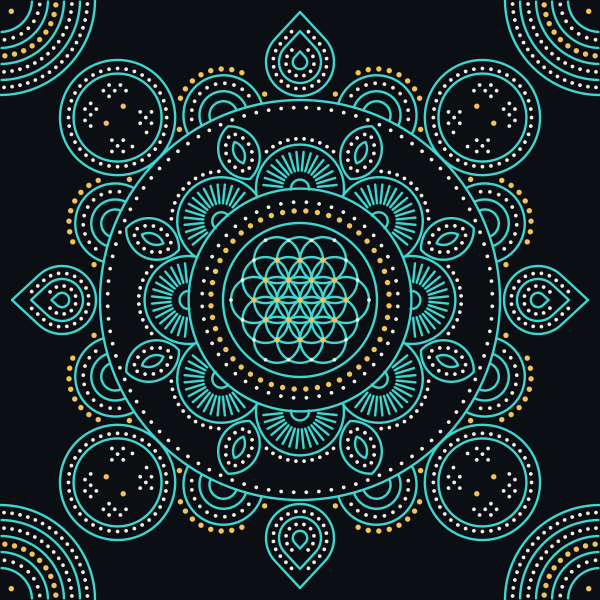</div><h3>Turquoise</h3></figure>
<figure class="painting" style="margin:0"><div class="canvas">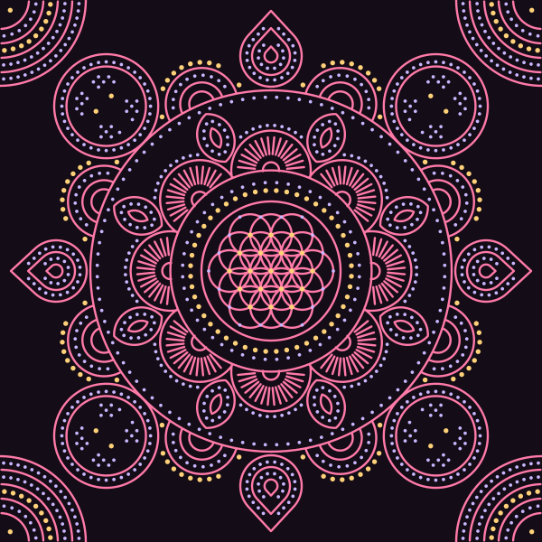</div><h3>Rose</h3></figure>
</div>
<p class="muted">Uses Kit 01’s hub, centre inserts, R1, DM and PT, plus:</p>
<div class="parts"><article class="part"><div class="pic">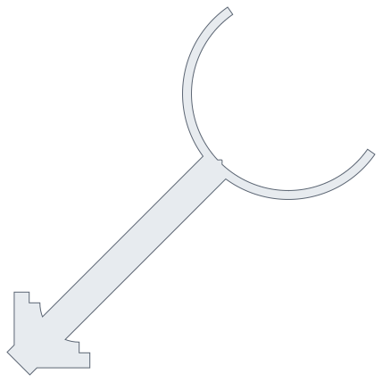</div>
<div class="meta"><div class="id"><code>J30</code><h3>Centre jig 30 cm / 12 in</h3></div><p></p>
<dl><dt>use</dt><dd>once</dd><dt>size</dt><dd>206 × 206 mm · prints lips up</dd>
<dt>print</dt><dd>~90 min · 17 g</dd><dt>file</dt><dd>03_J30_jig_30cm_12in.stl</dd></dl></div></article><article class="part"><div class="pic">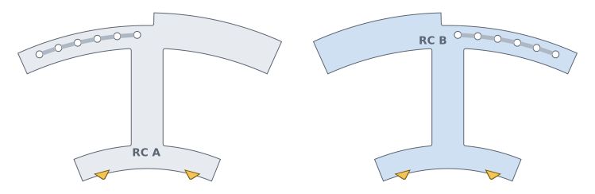</div>
<div class="meta"><div class="id"><code>RC</code><h3>Ring C2</h3></div><p>smooth edge = ring, notches = outer pearls, grooved pockets = inner pearls</p>
<dl><dt>use</dt><dd>A then B at hub 1–8</dd><dt>size</dt><dd>83 × 53 mm · two faces</dd>
<dt>print</dt><dd>~20 min · 3 g</dd><dt>file</dt><dd>40_RC_ring_c2.stl</dd></dl></div></article><article class="part"><div class="pic"></div>
<div class="meta"><div class="id"><code>FN</code><h3>Rainbow fan</h3></div><p>edge = outer arc, slots = inner arcs, grooved pockets + crown notches = dots</p>
<dl><dt>use</dt><dd>A then B at hub 1–8</dd><dt>size</dt><dd>84 × 61 mm · two faces</dd>
<dt>print</dt><dd>~30 min · 4 g</dd><dt>file</dt><dd>41_FN_fan.stl</dd></dl></div></article><article class="part"><div class="pic">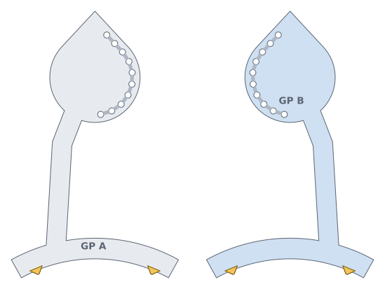</div>
<div class="meta"><div class="id"><code>GP</code><h3>Great petal</h3></div><p>edge = outline, grooved pockets = pearls</p>
<dl><dt>use</dt><dd>A then B at hub 1·3·5·7</dd><dt>size</dt><dd>60 × 95 mm · two faces</dd>
<dt>print</dt><dd>~20 min · 4 g</dd><dt>file</dt><dd>42_GP_great_petal.stl</dd></dl></div></article><article class="part"><div class="pic">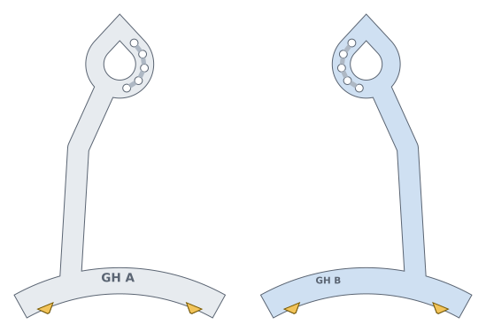</div>
<div class="meta"><div class="id"><code>GH</code><h3>Petal heart</h3></div><p></p>
<dl><dt>use</dt><dd>A then B at hub 1·3·5·7</dd><dt>size</dt><dd>60 × 86 mm · two faces</dd>
<dt>print</dt><dd>~20 min · 2 g</dd><dt>file</dt><dd>43_GH_petal_heart.stl</dd></dl></div></article><article class="part"><div class="pic">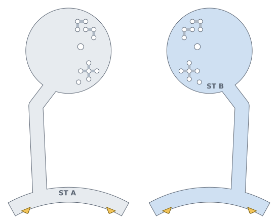</div>
<div class="meta"><div class="id"><code>ST</code><h3>Star disc</h3></div><p>edge = circle, sparkles = pockets on cross grooves</p>
<dl><dt>use</dt><dd>A then B at hub 2·4·6·8</dd><dt>size</dt><dd>60 × 103 mm · two faces</dd>
<dt>print</dt><dd>~30 min · 5 g</dd><dt>file</dt><dd>44_ST_star_disc.stl</dd></dl></div></article><article class="part"><div class="pic">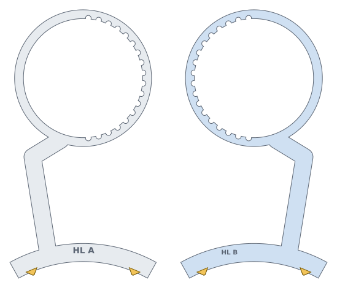</div>
<div class="meta"><div class="id"><code>HL</code><h3>Halo</h3></div><p>outer edge = echo circle, inner notches = pearls</p>
<dl><dt>use</dt><dd>A then B at hub 2·4·6·8</dd><dt>size</dt><dd>60 × 110 mm · two faces</dd>
<dt>print</dt><dd>~20 min · 3 g</dd><dt>file</dt><dd>45_HL_halo.stl</dd></dl></div></article><article class="part"><div class="pic">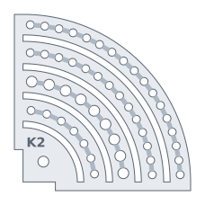</div>
<div class="meta"><div class="id"><code>K2</code><h3>Corner fan 30 cm</h3></div><p></p>
<dl><dt>use</dt><dd>4 corners</dd><dt>size</dt><dd>49 × 49 mm · prints lips up</dd>
<dt>print</dt><dd>~20 min · 4 g</dd><dt>file</dt><dd>46_K2_corner_30cm.stl</dd></dl></div></article></div>
<h3>Step by step</h3>
<div class="steps"><div class="step"><div class="canvas">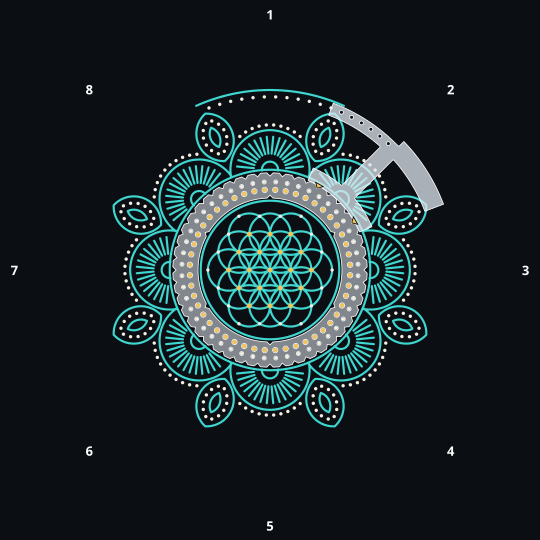</div><h3>Ring C2: RC</h3><ul><li>After the Seed Bloom centre (with J30): smooth edge = ring, notches = outer pearls, grooved pockets = inner pearls.</li></ul></div><div class="step"><div class="canvas">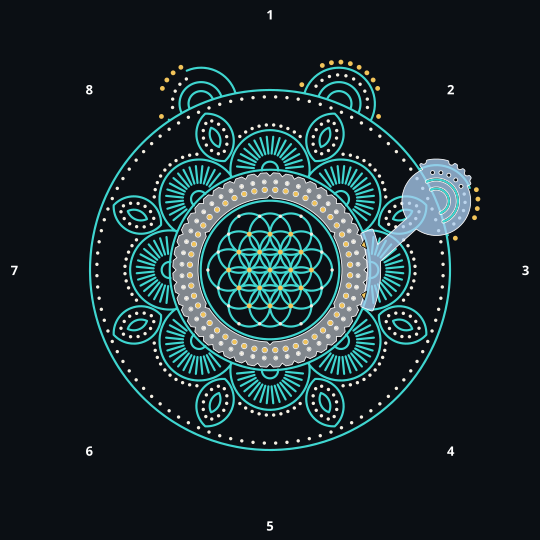</div><h3>Rainbow fans: FN</h3><ul><li>Edge = outer arc, slots = inner arcs, grooved pockets and crown notches = dots.</li></ul></div><div class="step"><div class="canvas">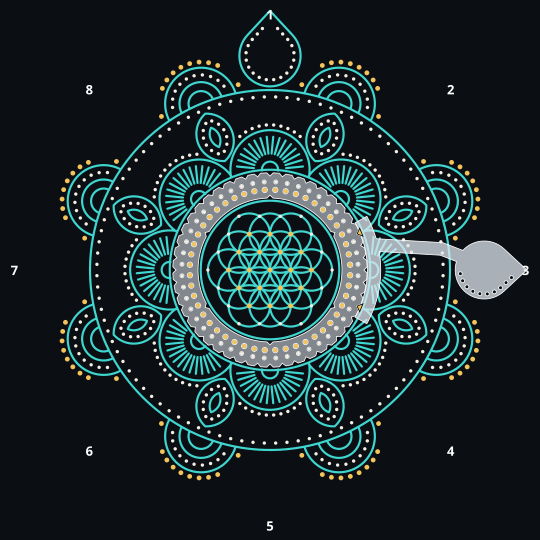</div><h3>Great petals: GP</h3><ul><li>Only at 1, 3, 5, 7. Edge = outline; face B closes the gap at the arm.</li></ul></div><div class="step"><div class="canvas">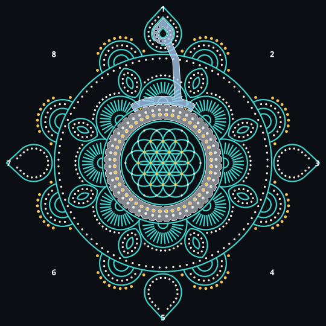</div><h3>Petal hearts: GH</h3><ul><li>Same numbers. Edge = middle teardrop, opening = inner teardrop.</li></ul></div><div class="step"><div class="canvas">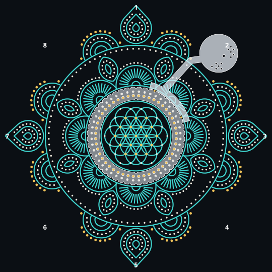</div><h3>Star discs: ST</h3><ul><li>Only at 2, 4, 6, 8. Edge = circle, sparkles = pockets on cross grooves.</li></ul></div><div class="step"><div class="canvas">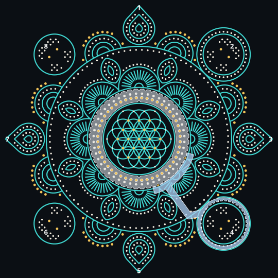</div><h3>Halos: HL</h3><ul><li>Same numbers. Outer edge = echo circle, inner notches = pearls.</li></ul></div><div class="step"><div class="canvas">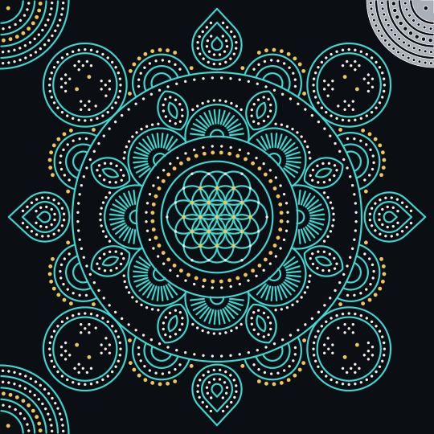</div><h3>Corners: K2</h3><ul><li>Hook on each corner.</li></ul></div></div>
</div></section>

<section id="library"><div class="wrap">
<span class="eyebrow">Phase 3 · library</span>
<h2>More centres and a second ring set</h2>
<h3>Centres</h3>
<div class="parts"><article class="part"><div class="pic">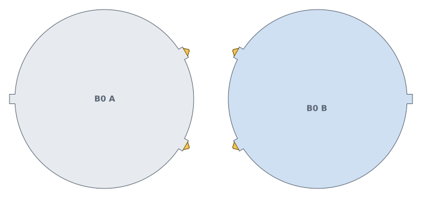</div>
<div class="meta"><div class="id"><code>B0</code><h3>Border ring</h3></div><p>trace the circle in the gap; face B closes the tab gaps</p>
<dl><dt>use</dt><dd>A then B at notch 1</dd><dt>size</dt><dd>78 × 75 mm · two faces</dd>
<dt>print</dt><dd>~60 min · 11 g</dd><dt>file</dt><dd>15_B0_border_ring.stl</dd></dl></div></article><article class="part"><div class="pic">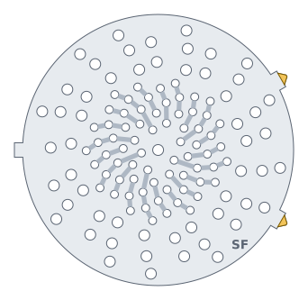</div>
<div class="meta"><div class="id"><code>SF</code><h3>Sunflower</h3></div><p>golden-angle dots on 21 spiral grooves</p>
<dl><dt>use</dt><dd>once</dd><dt>size</dt><dd>78 × 75 mm · one face</dd>
<dt>print</dt><dd>~50 min · 9 g</dd><dt>file</dt><dd>16_SF_sunflower.stl</dd></dl></div></article><article class="part"><div class="pic">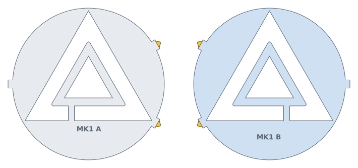</div>
<div class="meta"><div class="id"><code>MK1</code><h3>Merkaba lines</h3></div><p>outer and inner triangles inside the openings, middle triangle around the island</p>
<dl><dt>use</dt><dd>A then B at notch 1·2</dd><dt>size</dt><dd>78 × 75 mm · two faces</dd>
<dt>print</dt><dd>~40 min · 8 g</dd><dt>file</dt><dd>17_MK1_merkaba_lines.stl</dd></dl></div></article><article class="part"><div class="pic">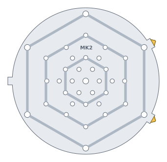</div>
<div class="meta"><div class="id"><code>MK2</code><h3>Merkaba dots</h3></div><p></p>
<dl><dt>use</dt><dd>once</dd><dt>size</dt><dd>78 × 75 mm · one face</dd>
<dt>print</dt><dd>~60 min · 10 g</dd><dt>file</dt><dd>18_MK2_merkaba_dots.stl</dd></dl></div></article><article class="part"><div class="pic">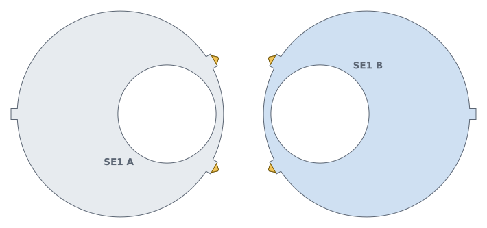</div>
<div class="meta"><div class="id"><code>SE1</code><h3>Seed of Life: petals</h3></div><p></p>
<dl><dt>use</dt><dd>A then B at notch 1·2·3</dd><dt>size</dt><dd>78 × 75 mm · two faces</dd>
<dt>print</dt><dd>~50 min · 9 g</dd><dt>file</dt><dd>19_SE1_seed_petals.stl</dd></dl></div></article><article class="part"><div class="pic">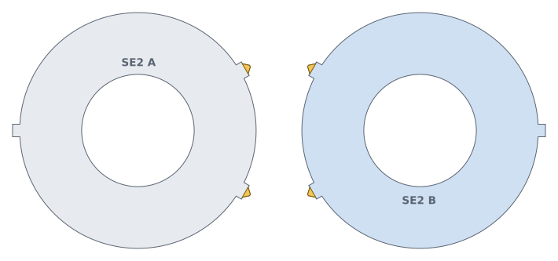</div>
<div class="meta"><div class="id"><code>SE2</code><h3>Seed of Life: centre + border</h3></div><p></p>
<dl><dt>use</dt><dd>A then B at notch 1</dd><dt>size</dt><dd>78 × 75 mm · two faces</dd>
<dt>print</dt><dd>~50 min · 9 g</dd><dt>file</dt><dd>20_SE2_seed_centre_border.stl</dd></dl></div></article><article class="part"><div class="pic">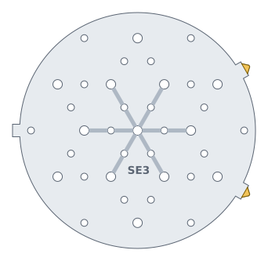</div>
<div class="meta"><div class="id"><code>SE3</code><h3>Seed of Life: dots</h3></div><p></p>
<dl><dt>use</dt><dd>once</dd><dt>size</dt><dd>78 × 75 mm · one face</dd>
<dt>print</dt><dd>~60 min · 10 g</dd><dt>file</dt><dd>21_SE3_seed_dots.stl</dd></dl></div></article><article class="part"><div class="pic">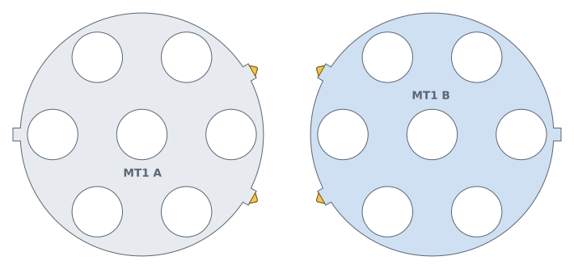</div>
<div class="meta"><div class="id"><code>MT1</code><h3>Metatron: centre + outer circles</h3></div><p></p>
<dl><dt>use</dt><dd>A then B at notch 1</dd><dt>size</dt><dd>78 × 75 mm · two faces</dd>
<dt>print</dt><dd>~40 min · 8 g</dd><dt>file</dt><dd>22_MT1_metatron_circles_a.stl</dd></dl></div></article><article class="part"><div class="pic">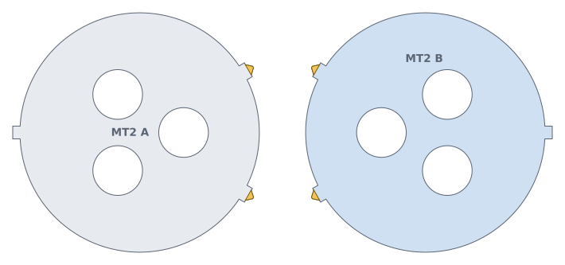</div>
<div class="meta"><div class="id"><code>MT2</code><h3>Metatron: inner circles</h3></div><p></p>
<dl><dt>use</dt><dd>A then B at notch 1</dd><dt>size</dt><dd>78 × 75 mm · two faces</dd>
<dt>print</dt><dd>~50 min · 10 g</dd><dt>file</dt><dd>23_MT2_metatron_circles_b.stl</dd></dl></div></article><article class="part"><div class="pic">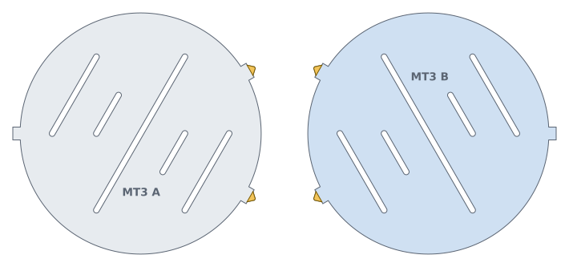</div>
<div class="meta"><div class="id"><code>MT3</code><h3>Metatron lines 0/60/120</h3></div><p></p>
<dl><dt>use</dt><dd>A then B at notch 1·2</dd><dt>size</dt><dd>78 × 75 mm · two faces</dd>
<dt>print</dt><dd>~60 min · 10 g</dd><dt>file</dt><dd>24_MT3_metatron_lines_a.stl</dd></dl></div></article><article class="part"><div class="pic">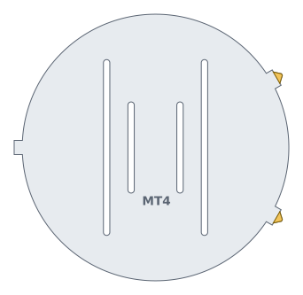</div>
<div class="meta"><div class="id"><code>MT4</code><h3>Metatron lines 30/90/150</h3></div><p></p>
<dl><dt>use</dt><dd>A at notch 1·2·3</dd><dt>size</dt><dd>78 × 75 mm · one face</dd>
<dt>print</dt><dd>~60 min · 10 g</dd><dt>file</dt><dd>25_MT4_metatron_lines_b.stl</dd></dl></div></article><article class="part"><div class="pic"></div>
<div class="meta"><div class="id"><code>MT5</code><h3>Metatron lines 19/41</h3></div><p></p>
<dl><dt>use</dt><dd>A then B at notch 1·2·3</dd><dt>size</dt><dd>78 × 75 mm · two faces</dd>
<dt>print</dt><dd>~60 min · 11 g</dd><dt>file</dt><dd>26_MT5_metatron_lines_c.stl</dd></dl></div></article><article class="part"><div class="pic"></div>
<div class="meta"><div class="id"><code>MT6</code><h3>Metatron dots</h3></div><p></p>
<dl><dt>use</dt><dd>once</dd><dt>size</dt><dd>78 × 75 mm · one face</dd>
<dt>print</dt><dd>~60 min · 11 g</dd><dt>file</dt><dd>27_MT6_metatron_dots.stl</dd></dl></div></article></div>
<h3>Lace ring set</h3>
<div class="parts"><article class="part"><div class="pic"></div>
<div class="meta"><div class="id"><code>AR</code><h3>Arch</h3></div><p>band edge = base circle, round edge = arch, cut-out = inner arch</p>
<dl><dt>use</dt><dd>A then B at hub 1–8</dd><dt>size</dt><dd>48 × 13 mm · two faces</dd>
<dt>print</dt><dd>~10 min · 0 g</dd><dt>file</dt><dd>33_AR_arch.stl</dd></dl></div></article><article class="part"><div class="pic"></div>
<div class="meta"><div class="id"><code>LT</code><h3>Lotus petal</h3></div><p></p>
<dl><dt>use</dt><dd>A then B at hub 1–8</dd><dt>size</dt><dd>46 × 28 mm · two faces</dd>
<dt>print</dt><dd>~10 min · 1 g</dd><dt>file</dt><dd>34_LT_lotus.stl</dd></dl></div></article><article class="part"><div class="pic"></div>
<div class="meta"><div class="id"><code>OR</code><h3>Outer ring</h3></div><p>smooth edge = ring, notches = pearls</p>
<dl><dt>use</dt><dd>A then B at hub 1–8</dd><dt>size</dt><dd>66 × 30 mm · two faces</dd>
<dt>print</dt><dd>~20 min · 2 g</dd><dt>file</dt><dd>35_OR_outer_ring.stl</dd></dl></div></article><article class="part"><div class="pic"></div>
<div class="meta"><div class="id"><code>OP</code><h3>Outer petal</h3></div><p></p>
<dl><dt>use</dt><dd>A then B at hub 1–8</dd><dt>size</dt><dd>49 × 47 mm · two faces</dd>
<dt>print</dt><dd>~10 min · 2 g</dd><dt>file</dt><dd>36_OP_outer_petal.stl</dd></dl></div></article></div>
<h3>Recipes</h3>
<div class="gallery"><figure><div class="canvas"></div><figcaption>Fol + Bloom</figcaption></figure><figure><div class="canvas"></div><figcaption>Fol + Lace</figcaption></figure><figure><div class="canvas"></div><figcaption>Sunflower + Bloom</figcaption></figure><figure><div class="canvas"></div><figcaption>Sunflower + Lace</figcaption></figure><figure><div class="canvas"></div><figcaption>Merkaba + Bloom</figcaption></figure><figure><div class="canvas"></div><figcaption>Merkaba + Lace</figcaption></figure><figure><div class="canvas"></div><figcaption>Seed + Bloom</figcaption></figure><figure><div class="canvas"></div><figcaption>Seed + Lace</figcaption></figure><figure><div class="canvas"></div><figcaption>Metatron + Bloom</figcaption></figure><figure><div class="canvas"></div><figcaption>Metatron + Lace</figcaption></figure></div>
</div></section>

<section id="mixer"><div class="wrap">
<span class="eyebrow">Design a kit</span>
<h2>Mixer</h2>
<div class="mixer">
<div class="stage" id="stage"><div data-layer="hub"></div><div data-layer="core"></div><div data-layer="ring"></div><div data-layer="corner"></div></div>
<div class="controls">
<fieldset><legend>Centre</legend><label><input type="radio" name="core" value="fol" checked> Flower of Life</label><label><input type="radio" name="core" value="sunflower" > Sunflower</label><label><input type="radio" name="core" value="merkaba" > Merkaba</label><label><input type="radio" name="core" value="seed" > Seed of Life</label><label><input type="radio" name="core" value="metatron" > Metatron’s Cube</label></fieldset>
<fieldset><legend>Ring</legend><label><input type="radio" name="ring" value="bloom" checked> Bloom (domes + petals)</label><label><input type="radio" name="ring" value="lace" > Lace (arches, lotus, ring, petals)</label></fieldset>
<fieldset><legend>Colours</legend><label><input type="radio" name="pal" value="turquoise" checked> Turquoise</label><label><input type="radio" name="pal" value="moonlight" > Moonlight</label><label><input type="radio" name="pal" value="rose" > Rose</label><label><input type="radio" name="pal" value="gold" > Gold</label></fieldset>
<fieldset><legend>Corners</legend><label><input type="checkbox" id="corners" checked> Corner webs (K1)</label></fieldset>
<p class="parts-used" id="used"></p>
</div></div></div></section>

<section id="rules"><div class="wrap">
<span class="eyebrow">Alignment and application</span>
<h2>Rules</h2>
<div class="rules">
<div class="rule"><b>Never move the hub</b><p>Everything refers to it. If it shifts, press it back with the jig.</p></div>
<div class="rule"><b>Teeth first, then flat</b><p>Set the teeth in their notches, then lay the piece flat. Lift straight up.</p></div>
<div class="rule"><b>Face A, then flip to face B</b><p>At every placement in the tables. Some pieces are one-faced; their table says “A”.</p></div>
<div class="rule"><b>Edges: light contact all round</b><p>Keep the marker upright and the tip touching the edge or the opening wall.</p></div>
<div class="rule"><b>Lanes: ride the piece, not the hub</b><p>In the gap around the hub, keep the tip against the piece’s edge. The hub side has notches.</p></div>
<div class="rule"><b>Grooves: glide, press, glide</b><p>The tip can’t reach the canvas in the groove, only at the pockets.</p></div>
<div class="rule"><b>Big holes = colour 3, small = colour 2</b><p>The hole size tells you which marker to use.</p></div>
<div class="rule"><b>Prime on scrap, wipe between colours</b><p>A flooded tip runs under the piece. Wipe the piece’s face when you change colour or flip it.</p></div>
</div></div></section>

<section id="files"><div class="wrap">
<span class="eyebrow">Files</span>
<h2>Project folder</h2>
<div class="two"><ul class="files"><li>stl/00_T0_fit_card.stl</li><li>stl/01_H3_hub.stl</li><li>stl/02_J20_jig_20cm_8in.stl</li><li>stl/03_J30_jig_30cm_12in.stl</li><li>stl/10_FA_flower_corners.stl</li><li>stl/11_FB_flower_inner_ring.stl</li><li>stl/12_FC_flower_sides.stl</li><li>stl/13_FD_flower_centre_border.stl</li><li>stl/14_FE_flower_dots.stl</li><li>stl/15_B0_border_ring.stl</li><li>stl/16_SF_sunflower.stl</li><li>stl/17_MK1_merkaba_lines.stl</li><li>stl/18_MK2_merkaba_dots.stl</li><li>stl/19_SE1_seed_petals.stl</li><li>stl/20_SE2_seed_centre_border.stl</li><li>stl/21_SE3_seed_dots.stl</li><li>stl/22_MT1_metatron_circles_a.stl</li><li>stl/23_MT2_metatron_circles_b.stl</li><li>stl/24_MT3_metatron_lines_a.stl</li><li>stl/25_MT4_metatron_lines_b.stl</li><li>stl/26_MT5_metatron_lines_c.stl</li><li>stl/27_MT6_metatron_dots.stl</li><li>stl/30_R1_hub_ring.stl</li><li>stl/31_DM_dome.stl</li><li>stl/32_PT_petal.stl</li><li>stl/33_AR_arch.stl</li><li>stl/34_LT_lotus.stl</li><li>stl/35_OR_outer_ring.stl</li><li>stl/36_OP_outer_petal.stl</li><li>stl/37_K1_corner_20cm.stl</li><li>stl/40_RC_ring_c2.stl</li><li>stl/41_FN_fan.stl</li><li>stl/42_GP_great_petal.stl</li><li>stl/43_GH_petal_heart.stl</li><li>stl/44_ST_star_disc.stl</li><li>stl/45_HL_halo.stl</li><li>stl/46_K2_corner_30cm.stl</li></ul>
<div style="display:grid;gap:10px;align-content:start">
<p><span class="mono">make_v3.py</span> rebuilds every STL from your marker profile and runs all 130 checks.</p>
<p><span class="mono">render_v3.py</span> renders the paintings, recipes, mixer layers, step frames and part drawings.</p>
<p><span class="mono">v3.py</span> is the system (hub, lock, lanes, grooves, pieces). <span class="mono">v3_kit1.py</span> and <span class="mono">v3_more.py</span> are the designs.</p>
<pre>python3 make_v3.py --line 2.0 --dot-s 2.4 --dot-m 3.2</pre>
<p class="muted">Earlier versions (v1 plates, v2 prototype) are kept in <span class="mono">archive/</span>. They do not fit the v3 hub.</p>
</div></div></div></section>

<footer><div class="wrap">Mandala Stencil Studio · v3 · millimetres · hub numbers run clockwise from the top.</div></footer>

<script>
(function () {
  var PAL = {"turquoise": ["#0b0f14", "#3fd6d0", "#f4efe2", "#f2c45a"], "moonlight": ["#121a3d", "#f1ece0", "#8fe3ff", "#f2c45a"], "rose": ["#140c16", "#ff7aa8", "#c9b6ff", "#ffd27a"], "gold": ["#101010", "#f2c45a", "#f4efe2", "#3fd6d0"]};
  var CORES = {"fol": ["FA", "FB", "FC", "FD", "FE"], "sunflower": ["B0", "SF"], "merkaba": ["MK1", "MK2"], "seed": ["SE1", "SE2", "SE3"], "metatron": ["MT1", "MT2", "MT3", "MT4", "MT5", "MT6"]};
  var RINGS = {"bloom": ["R1", "DM", "PT"], "lace": ["R1", "AR", "LT", "OR", "OP"]};
  var cache = {};
  function load(name) {
    if (cache[name]) return cache[name];
    cache[name] = fetch('img3/mx_' + name + '.svg').then(function (r) { return r.text(); }).catch(function () { return ''; });
    return cache[name];
  }
  function val(n) { var e = document.querySelector('input[name="' + n + '"]:checked'); return e ? e.value : null; }
  function render() {
    var st = document.getElementById('stage');
    var core = val('core'), ring = val('ring'), pal = PAL[val('pal')];
    st.style.setProperty('--mx-bg', pal[0]); st.style.setProperty('--mx-line', pal[1]);
    st.style.setProperty('--mx-white', pal[2]); st.style.setProperty('--mx-gold', pal[3]);
    var want = { hub: 'hub', core: 'core_' + core, ring: 'ring_' + ring, corner: document.getElementById('corners').checked ? 'corner' : '' };
    Object.keys(want).forEach(function (k) {
      var el = st.querySelector('[data-layer="' + k + '"]');
      if (!want[k]) { el.innerHTML = ''; return; }
      load(want[k]).then(function (t) { el.innerHTML = t; });
    });
    var used = CORES[core].concat(['H3'], RINGS[ring], document.getElementById('corners').checked ? ['K1'] : []);
    document.getElementById('used').textContent = 'Parts: ' + used.join(' · ');
  }
  document.querySelectorAll('.controls input').forEach(function (i) { i.addEventListener('change', render); });
  render();
})();
</script>
